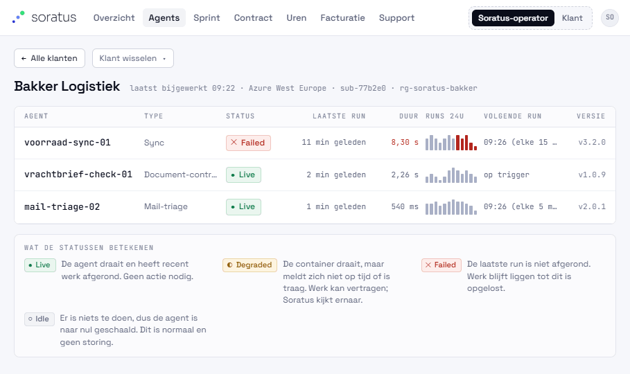
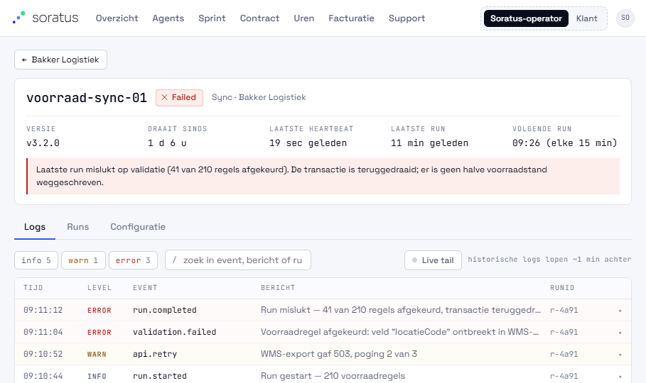
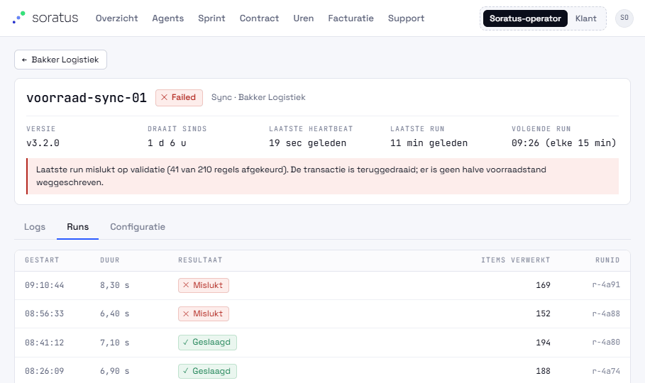
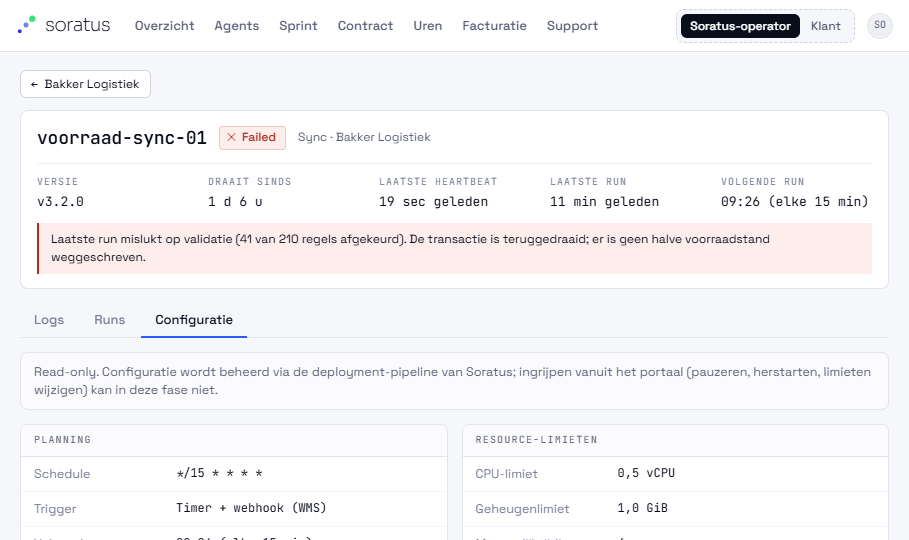
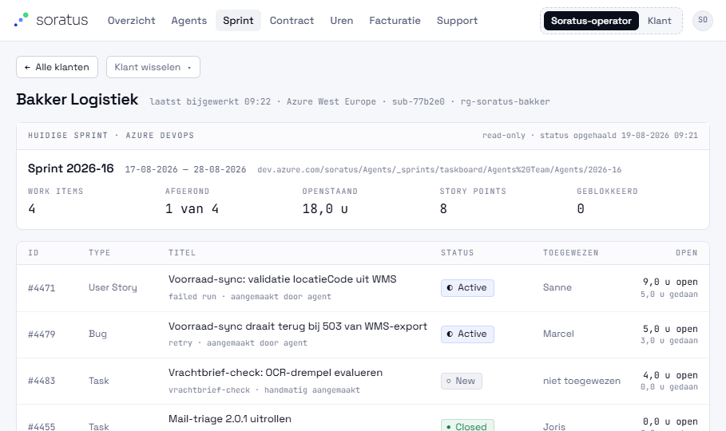
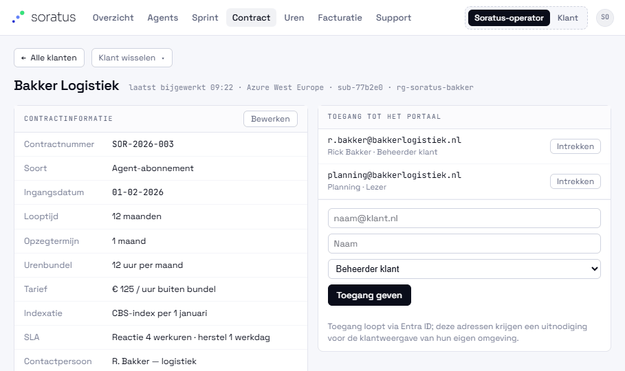
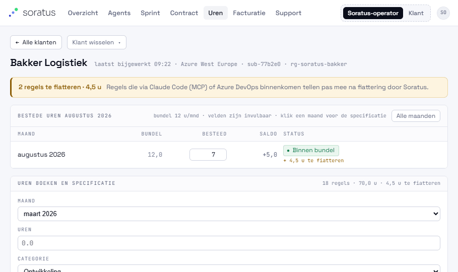
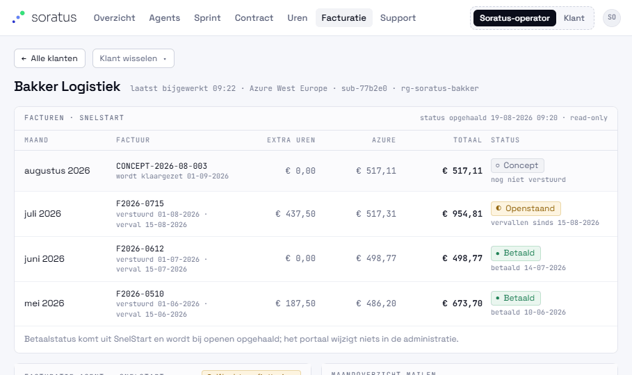
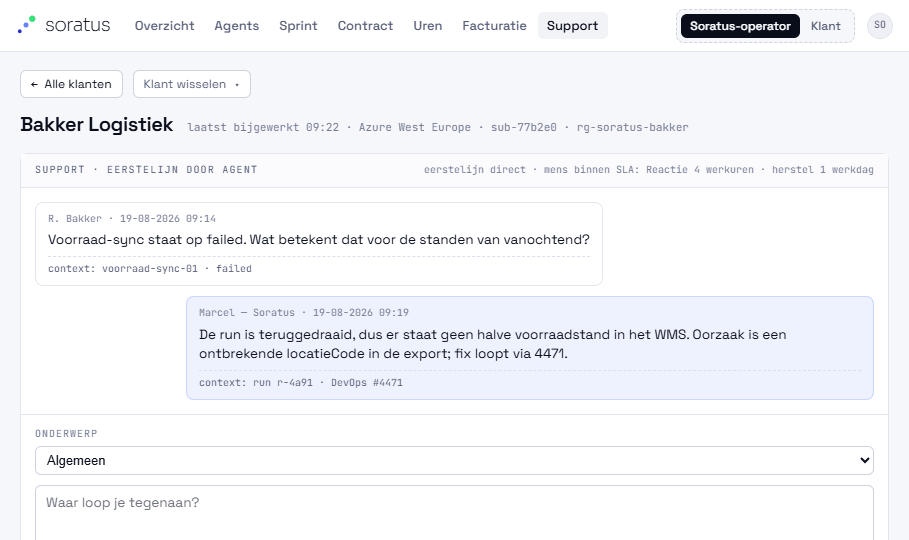
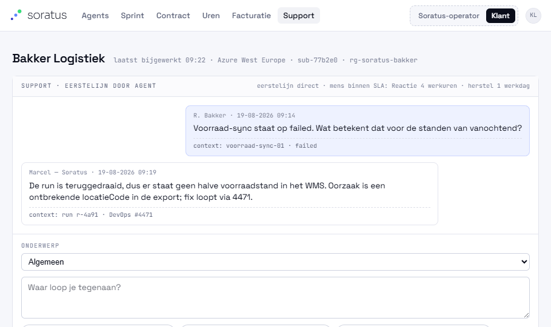

Sortering op ernst, dan recentheid — failed > degraded > live > idle. Idle tilt een klant nooit naar boven.
Per klant de omgeving (regio · subscription), statusverdeling als balk, en de ernstigste status met label én glyph.
Interne klant "Soratus — intern beheer" staat er gewoon tussen: onze beheeragents monitoren we met hetzelfde scherm.
2 · Klantweergave — agents
Precies wat de klant zelf ziet. De operator heeft er alleen een terugknop en klant-switcher bij.

Per agent: type, status, laatste run en duur, sparkline van 24 uur (mislukte blokken rood), volgende run, versie.
Statuslegenda in gewone taal onderaan — een klant kent "degraded" niet vanzelf.
Idle is neutraal grijs met "normale rusttoestand": geen storing.
3 · Agentdetail — Logs
De hoofdmoot bij een storing: wat is er precies gebeurd?

Kop met versie, draait sinds, laatste heartbeat, laatste en volgende run; daaronder een statusspecifieke melding (hier: transactie teruggedraaid, geen halve voorraadstand).
Filters op info/warn/error met tellingen en een zoekveld over event, bericht en runId.
Live tail met de eerlijke melding "historische logs lopen ~1 min achter".
Elke regel klapt uit naar de volledige JSON, inclusief payload en stacktrace, die netjes afbreekt.
4 · Agentdetail — Runs en Configuratie


Runs: starttijd, duur, resultaat en aantal verwerkte items per run.
Configuratie is read-only — planning, trigger, resource-limieten, image, identity. Ingrijpen (pauzeren, herstarten) kan bewust nog niet, en dat staat er ook.
5 · Sprint
De huidige sprint uit Azure DevOps, read-only.

Sprintnaam, periode, boardpad en het tijdstip van ophalen.
Work items met state, toegewezen persoon, open en gedane uren, en of het item door een agent of handmatig is aangemaakt.
Agents schieten taken in DevOps in; het portaal schrijft niets terug en haalt bij openen alleen de laatste status op.
6 · Contract

Contractnummer, soort, looptijd, opzegtermijn, urenbundel, uurtarief buiten bundel, indexatie, SLA, contactpersoon. Soratus kan alle velden bewerken; de klant leest mee.
Toegang tot het portaal: e-mailadres, naam en rol per persoon, uit te geven en in te trekken. Loopt via Entra ID.
Nieuwe klanten worden op het overzicht aangemaakt met dezelfde velden plus de e-mailadressen die toegang krijgen.
7 · Uren

Standaard alleen de huidige maand: bundel, besteed, saldo, status. "Alle maanden" klapt de historie en het jaartotaal open.
Klik op een maand filtert de specificatie en zet die maand in het boekformulier.
Elke regel heeft een bron (Portaal · MCP/Claude Code · Azure DevOps) en een naam van wie het boekte.
Regels die een agent inschiet komen binnen als "te fiatteren" en tellen pas mee na akkoord. De klant ziet die stroom niet — alleen gefiatteerde uren.
8 · Facturatie

Facturen per maand uit SnelStart: nummer, verstuurd- en vervaldatum, extra uren, Azure, totaal en status Concept · Verzonden · Openstaand · Betaald met betaaldatum.
De facturatie-agent zet op de 1e van de volgende maand een conceptfactuur klaar; versturen doen wij zelf.
Azure-kosten per dienst uit de resource group, met beheeropslag — door ons aanpasbaar. De klant ziet alleen het door te belasten totaal.
Uren boven bundel rollen automatisch mee en staan met Azure op één factuur, achteraf.
Maandoverzicht mailen naar de contactpersoon, met verzendbevestiging.
9 · Support
Boven de operatorweergave, onder dezelfde draad in de klantrol.


Een AI-eerstelijnsagent antwoordt direct op basis van wat er in het portaal staat: agentstatus met uitleg, laatste en volgende run, het bijbehorende DevOps-item, uren tegen de bundel, factuur- en betaalstatus, open sprintitems.
Elke AI-bubbel draagt het badge "AI · eerstelijn" plus de bron van het antwoord, en biedt "Toch een mens van Soratus spreken".
Weet de agent het niet, dan zegt hij dat en escaleert binnen de SLA. In de operatorrol antwoordt een mens en springt de agent er niet tussen.
Opbouw in fases
Fundament — tokens, Entra ID met twee rollen, klant- en agentmodel op seed-data.
Observability — status, heartbeat, runs, logs uit Container Apps en Log Analytics.
Contract en toegang — contractbeheer, klant aanmaken, toegang per e-mailadres.
Uren — bundel, boeken, bronnen (MCP en DevOps), fiattering.
Kosten en facturatie — Azure-kosten per RG, conceptfactuur in SnelStart, betaalstatus terug.
Sprint en support — DevOps-weergave, berichtendraad, AI-eerstelijn.
Beheeragents — storingsmelder, automatische maandfactuur, interne klant in het overzicht.
Buiten scope voor nu: ingrijpen vanuit het portaal (pauzeren, herstarten, limieten), donkere variant, agent-provisioning direct vanuit klantaanmaak.